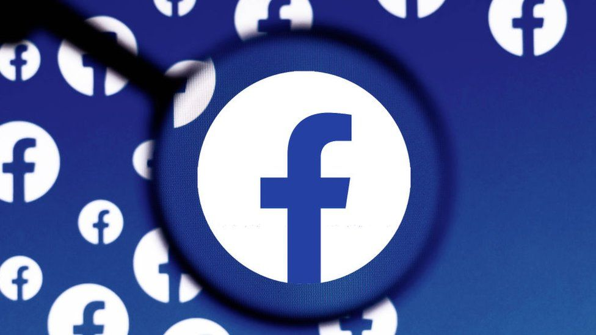

Facebook je největší sociální síť určená pro sdílení a komunikaci uživatelů a jejich vzájemného propojování.
Facebook byl založen Markem Zuckenbergem v roce 2004. Nápad na tuto sociální síť však zřejmě nebyl jeho vlastní, ale převzal jej od Camerona a Tylera Winklevossova, kterým byl nucen zaplatit za vyrovnání 65 milionů dolarů.
Facebook vydělává na reklamě a čelí velké kritice z nedostatečné ochrany osobních údajů uživatelů.
Kdo používá Facebook

- Facebook používá přes 2 miliardy uživatelů měsíčně.
- 74 % uživatelů se na sociální síť Facebook přihlásí každý den.
- Uživatelé stráví na Facebooku v průměru 38 minut denně.
- Uživatelem Facebooku je nejčastěji věková skupina:
- 25-29 let (84 %)
- 30-49 let (79 %)
- 18-24 let (76 %)